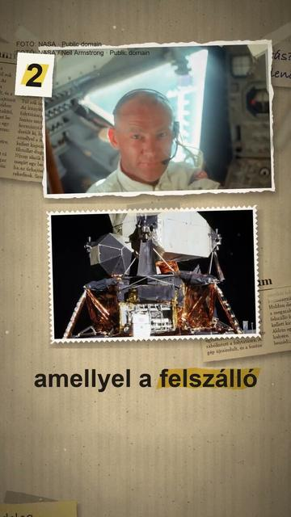

Megnézem a YouTube-on3 dolog, amit nem tudtál az Apollo–11-ről
Röviden: Leszálláskor a holdkomp számítógépe 1202-es (majd 1201-es) riasztást adott: a NASA oldalán közzétett beszámoló szerint ez azt jelentette, hogy a gépnek túl sok feladatot kellett egyszerre elvégeznie („executive overflow”).
Leszálláskor a holdkomp számítógépe 1202-es (majd 1201-es) riasztást adott: a NASA oldalán közzétett beszámoló szerint ez azt jelentette, hogy a gépnek túl sok feladatot kellett egyszerre elvégeznie („executive overflow”). Houston továbbengedte a legénységet; a gép minden riasztásnál újraindult, és a fontos feladatokat, köztük a leszálló hajtómű kormányzását, folytatta. A Holdon kiderült, hogy letört a felszálló hajtómű bekapcsolására szolgáló megszakító; Buzz Aldrin saját beszámolója szerint egy filctollat illesztett a helyére. William Safire, Nixon elnök beszédírója 1969. július 18-án megírt egy szöveget arra az esetre, ha az űrhajósok a Holdon rekednének, és nem térhetnének vissza a Földre; szerencsére nem volt rá szükség.
Az összes rész forrásokkal: https://valoban.pages.dev/
Források
- NASA SP-350: Apollo Expeditions to the Moon, 11.4 (Michael Collins)
- NASA Apollo 11 Lunar Surface Journal: Apollo 11 Program Alarms (Peter Adler)
- Smithsonian National Air and Space Museum: The Saga of Writing in Space (2017)
- National Archives: In Event of Moon Disaster
4 forrás · Hogyan ellenőrzünk?
Hibát találtál? Írd meg nekünk, megnézzük.
Képek és kreditek
• Az Apollo–11 legénysége: Armstrong, Collins, Aldrin (NASA, 1969) – NASA, Public domain (https://creativecommons.org/publicdomain/mark/1.0/) https://commons.wikimedia.org/?curid=102412
• A Sas holdkomp holdkörüli pályán, 1969 (NASA, Michael Collins) – NASA / Michael Collins, Public domain (https://creativecommons.org/publicdomain/mark/1.0/) https://commons.wikimedia.org/?curid=6449929
• Az Apollo-számítógép kezelőpanelje (DSKY) – Oona Räisänen & NASA, Public domain (https://creativecommons.org/publicdomain/mark/1.0/) https://commons.wikimedia.org/?curid=8991950
• Houston, irányítóközpont, 1969 (NASA) – NASA, Public domain (https://creativecommons.org/publicdomain/mark/1.0/) https://commons.wikimedia.org/?curid=64347421
• A Sas leszállásra kész állapotban, holdpályán, 1969 (NASA) – NASA, Public domain (https://creativecommons.org/publicdomain/mark/1.0/) https://commons.wikimedia.org/?curid=4934985
• Aldrin és a Sas a Holdfelszínen, 1969 (NASA, Neil Armstrong) – NASA / Neil Armstrong, Public domain (https://creativecommons.org/publicdomain/mark/1.0/) https://commons.wikimedia.org/?curid=170677470
• Aldrin a holdkomp belsejében, 1969 (NASA) – NASA, Public domain (https://creativecommons.org/publicdomain/mark/1.0/) https://commons.wikimedia.org/?curid=80862901
• Buzz Aldrin hivatalos portréja (NASA) – NASA, Public domain (https://creativecommons.org/publicdomain/mark/1.0/) https://commons.wikimedia.org/?curid=80478435
• Richard Nixon elnök hivatalos portréja – Fehér Ház, Public domain (https://creativecommons.org/publicdomain/mark/1.0/) https://commons.wikimedia.org/?curid=77365528
• Nixon a Fehér Házból telefonál a Holdon lévő űrhajósoknak, 1969 – Fehér Ház / NARA, Public domain (https://creativecommons.org/publicdomain/mark/1.0/) https://commons.wikimedia.org/?curid=106217071
• A Föld a Hold fölött, előtérben a Sas, 1969 (NASA) – NASA, Public domain (https://creativecommons.org/publicdomain/mark/1.0/) https://commons.wikimedia.org/?curid=40771371
• Houston ünnepel a küldetés végén, 1969 (NASA) – NASA, Public domain (https://creativecommons.org/publicdomain/mark/1.0/) https://commons.wikimedia.org/?curid=10956706
A képek módosítva: 9:16-ra kivágva, átméretezve, kameramozgással, ráégetett felirattal.